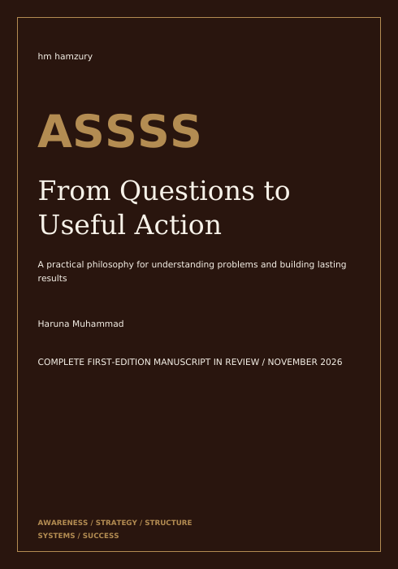

Before We Solve It, We Must Understand It
Branded PDF · Working edition, November 2026
Resources for people who want to think more clearly, teach practical problem solving and investigate whether an idea works.
Branded PDF · Working edition, November 2026
Branded PDF · Working edition, November 2026
Branded PDF · Working edition, November 2026

A 40-page practical book on Awareness, Strategy, Structure, Systems and Success. Explore 12 complete chapters, an illustrative worked example, six reusable worksheets and a glossary.
By Haruna Muhammad · November 2026 · In review
Download the full book ↓